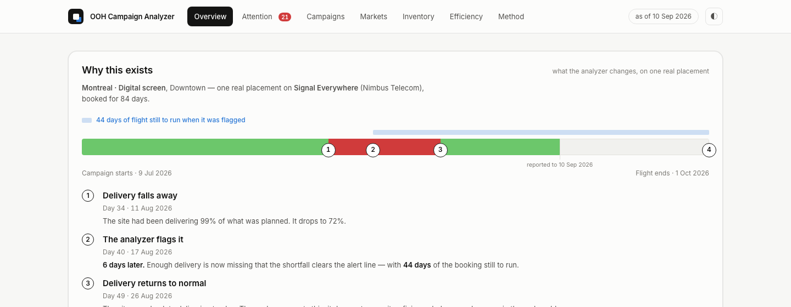
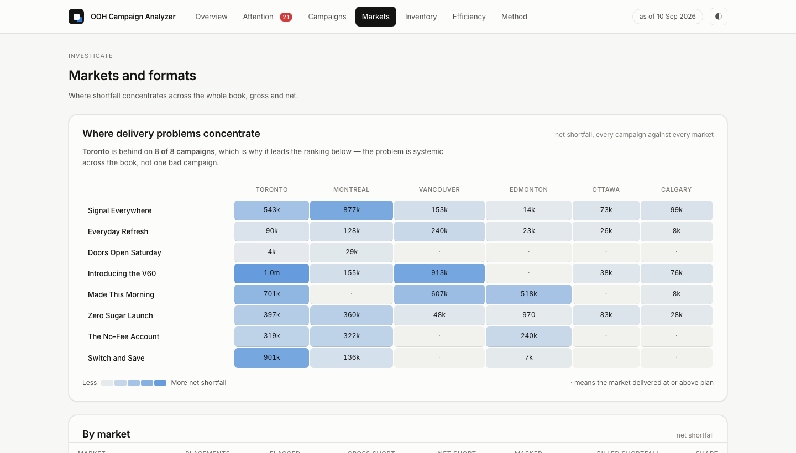

Case studyLive
OOH Campaign
Performance Analyzer
It measures every out-of-home placement against the impressions contracted by today, surfaces under-delivery that campaign-level reporting hides, prices it in media value, and separates what can still be fixed in flight from what has to be reconciled afterwards.
Where it came from
Kinetic, 2024–25 — one of two interns on the rotational programme at the WPP/GroupM out-of-home agency. Part of the job was reconciling media spend: CAD 1m+ across three national campaigns, rebuilt in Excel every day from tracking-team data.
That reconciliation found under-delivering sites weeks after the campaigns had ended. Nobody was slow. The process could only run at the end, because the comparison it needed — delivered against contracted — only resolved once the booking was over. That is a structural problem, and structural problems can be built around.
→ the role it came from: Kinetic, Business Analyst Intern
The problem
Out-of-home is billed against estimated impressions — a traffic count times a visibility factor, because a billboard cannot count who saw it. When a site goes dark or a screen drops offline, real delivery falls below that estimate. Three things make it hard to see.
A campaign can look healthy while placements are badly behind
Campaign reporting aggregates. One number for sixty placements hides the six that are failing.
Over-delivery masks under-delivery
Campaign variance nets the two against each other. Sites running hot cancel out sites running dark on paper — even though over-delivery in Calgary does not repair a dark screen in Montreal. The advertiser still did not get what they bought, where they bought it.
Reconciliation happens after the opportunity has passed
By the time the gap is visible, the flight is over and the money is spent.
What it does
The central mechanism: every placement is measured against its contracted impressions prorated to the days elapsed. Without that, a healthy placement three weeks into a twelve-week flight reads as −75% and the tool only works on campaigns that are already over.

Gross against net shortfall
The signature finding. Campaign variance nets over-delivery against under-delivery; gross shortfall counts only the placements that are behind. On this dataset the book reads −2.1% while 10.5m impressions are short across 227 placements, with 14% of the gap cancelled out on paper. One campaign reads −0.1% while 27 of its 70 placements are behind and 81% is masked.
In-flight fault detection
Delivery faults begin on a day — a site goes dark partway through a flight, and sometimes gets repaired. The analyzer finds them from the daily delivery series alone: three consecutive days below 90% of planned delivery. It is never shown the generator's fault log, which is the only reason the detection figures mean anything.
Live against completed
A placement still in the air is a phone call; a closed one is a credit conversation. They are ranked by different measures — live issues by the exposure still preventable, completed by billed shortfall — and presented as different components.
Media-value exposure
The shortfall priced at the rate the client agreed to pay per thousand, split into what has already been lost and what would still accrue if nothing changes. The two are never added together: one is spent, the other has not happened yet.

Evidence
| Delivery to plan | 97.9% |
|---|---|
| Gross shortfall, before netting | 10.5m impressions |
| Masked by over-delivery elsewhere | 14% |
| Placements flagged below −5% | 82 of 595 |
| Flagged media-value exposure | CAD 117,058 |
| Still preventable on live placements | CAD 36,255 |
| Faults recovered from delivery data alone | 98.1% |
| Median error in the inferred fault start date | 0 days |
| Median detection delay, against 31 days to reconciliation | 4 days |
| Scale | 120 sites · 8 campaigns · 595 placements |
| Unit tests | 44 |
These demonstrate that the system's central claim is measurable and that the detection method works against known ground truth — not that any particular detection rate would hold on real inventory. Real campaigns do not come with fault labels, which is precisely why the detector is built to work without them.
How it is built
Python computes; the browser renders. Every business calculation lives in one tested module. The frontend formats and lays out — it never recreates a metric, so there is exactly one definition of every figure and it is the one the tests cover.
The data model
Four normalised tables with enforced foreign keys — sites, campaigns, placements, delivery. A placement joins a campaign to a site over a date window; delivery records what it achieved each day, one row per placement per day.
Validation
The export refuses to write a payload if its elapsed-day arithmetic disagrees with the delivery rows the database holds. Standalone SQL reproduces the spend figure independently and agrees with Python to the dollar. 44 unit tests run on inputs small enough to check by hand.
One lesson worth recording
Gross shortfall is measured over every placement behind by any amount; the exposure figure beside it covered only those past the −5% line. Same formula, different population, CAD 17,598 apart. Both are now named separately — total negative delivery exposure and flagged media-value exposure — and the rule is written into the SQL so a future implementation cannot silently diverge.
Stack

What it deliberately does not do
Stating the limits is what makes the rest credible, and it is the analyzer's own habit — every one of these is documented in the repository.
- No forecasting. Preventable exposure extends the current rate across the remaining flight and is labelled modelled. No projection line is drawn on any chart.
- No calibrated share-of-loop model for digital faces, so digital and static CPM are never ranked against each other.
- No persistent site-quality model. The inventory view therefore reports a null result: 12 sites were flagged twice or more, against 17.2 expected by chance. There is no site-level signal in this data and the view says so.
- Reach and frequency are modelled, not measured, on a saturation curve that is a planning convention rather than a measurement.
- Fault detection is a stated rule, not a learned model — three consecutive days below 90% of plan. It is explainable out loud, which is the point.
The analyzer is live and the source is public.